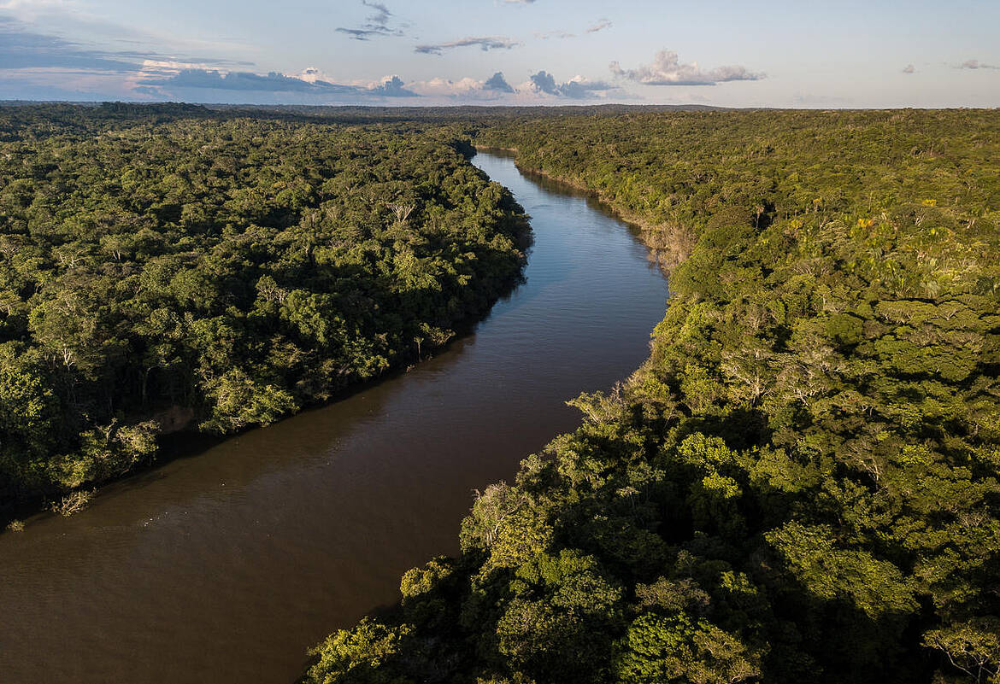
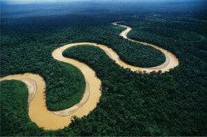
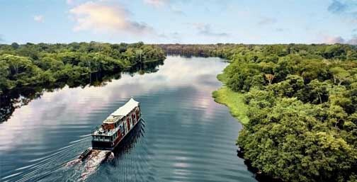

Origem da água: A água da chuva, da neve derretida ou de nascentes (lugares onde a água subterrânea emerge à superfície) começa a se acumular em pontos baixos do terreno.

Formação das correntes: Essa água que corre pela superfície do solo vai formando pequenos filetes de água chamados de córregos ou riachos. Eles se juntam e formam cursos de água maiores, os rios.

Caminho do rio: O rio segue seu caminho, geralmente em direção a regiões mais baixas, como vales ou bacias hidrográficas, até desaguar em um lago, outro rio maior, um mar ou oceano.
Força da gravidade: A água do rio é movimentada pela força da gravidade, que faz com que ela flua sempre para regiões de menor altitude.
elaborado por isaac ferreira martins